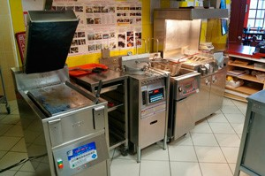
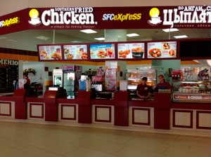
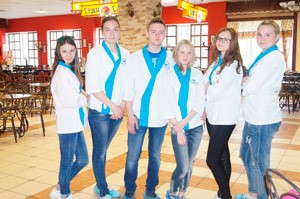
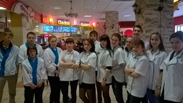

Экскурсия в кафе в формате фуд-кортов "Chicken" 2016
16 мая 2016 г. обучающимся сферы общественного питания представилась возможность побывать на рабочих участках группы компаний Алендвик – сетевого оператора общественного питания в сегменте кафе быстрого обслуживания в формате фуд-кортов с портфелем собственных и приобретенных по франшизе брендов различных форматов. В рамках изучения дисциплины «Техническое оснащение и организация рабочего места» ребята побывали на участке бренда «Chicken», которое специализируется на блюдах из курицы. Данное мероприятие было организовано преподавателями Суханцевой И.Н. и Порываевой И.В. совместно с администрацией кафе. Перед началом экскурсии был проведен целевой инструктаж по технике безопасности. В ходе экскурсии выяснилось, что участок имеет небольшую площадь. В цехе установлено современное оборудование: тостер, пресс-гриль, зеркальный гриль, бургерный стол, горячая витрина и фритюрница. Юлия Васильевна подробно рассказала о правилах работы на оборудовании, выделила особенности приготовления некоторых блюд. Особое внимание было уделено правилам техники безопасности при работе с фритюром. В процессе экскурсии происходило приготовление и подача блюд, за выполнением которых будущие специалисты также увлеченно наблюдали. Больше всего заинтересовала конструкция и назначение пресс - гриля, где курица готовится под большим давлением, что позволяет образованию хрустящей корочки на курице, но при этом мясо остается сочным и мягким. Также был рассмотрен весь технологический процесс приготовления и сбора бургеров и тортильи, порционирования картофеля фри.



